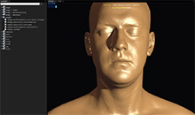
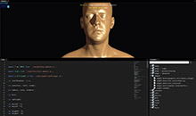
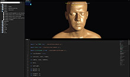
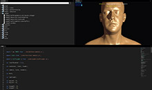
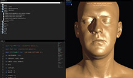

This application gives you full freedom in exploring official Three.js examples. Simply click on example in the tree view and it will show up in "Preview" panel. Javascript code for that example will be loaded in "Code" panel and there you'll be able to change/modify the code as you like.
When you want to see the result of your changes press "F5" or "CTRL+S" on you keyboard and the example will reload with those changes.
Note that original example IS NOT changed. You're working with a copy, so you don't have to worry about braking stuff.
The application has flexible layout system and you can change it as you want. And the application will save your layout every time you close it.
Here are a few different layouts for you to try:
    
Pick one of the layouts or create your own and start exploring wonderful world of Three.js.
Have fun!